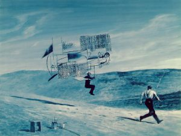
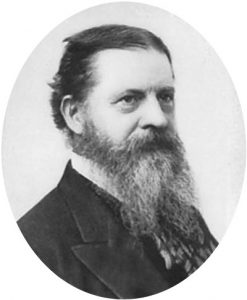

White, Ryan. The Hidden God: Pragmatism and Posthumanism in American Thought. New York: Columbia University Press, 2015. ISBN-10: 0231171005. Hardcover, e-book. 248 pages.
Ryan White’s The Hidden God: Pragmatism and Posthumanism in American Thought (Columbia University Press, 2015) sets for itself a rather Herculean task of coherently discussing perhaps the sole concept that is unavailable for conceptual analysis: God. As the title suggests, White attempts to signal his readers in the direction of an exclusion or an absence that draws a thread between what might be otherwise considered disparate American voices: Jonathan Edwards, Ralph Waldo Emerson, and Charles Sanders Peirce. For each of them White gives intensely nuanced readings (sometimes of overlooked or minor works) to find the hidden “thing” that acts as the impetus for these figures’ creative (and sometimes intensely logical) work.
In doing so, White is making a kind of argument about modernity (an argument perhaps to readers familiar with Bruno Latour) that it only comes into its full being through exclusion and disavowal of that which does fit modernity’s self-ascribed narrative. Paradoxically, modernity depends on that which it excludes for its very existence. For White, modernity begins only when “the world is no longer legible as a text by God,” and “real presence” fades from the world (2).
Consequently, a cut or division is introduced between the “revealed” and the “hidden” with modernity clearly choosing only to pursue that which is revealed and available for critical inquiry. As the well-rehearsed narrative goes, this is the essence of disenchantment.
White, of course, does not stop at disenchantment. White’s real interest is developing a sense for detecting the ruptures in the revealed through which the hidden “pops up like a tyrant” (4). The hidden rears its disquieting head in the form of contingency, chaos, and uncertainty – the kinds of things systems and closed networks run in terror from during the night. In the last instance, White will try to convince us these unsettling phenomena that haunt our would-be ascension to planetary mastery are not demons, but God.
White makes it clear that he is not gesturing in favor of some kind of transcendence overcoming or problematizing immanence as some contemporary theologians, reacting against the philosophy du jour, are wont to do. What both positions of transcendence and immanence share, White argues, is their unquestioned humanism—their presumption to be able to speak about and access the world and to hold an observational position (9).
Early forms of these position, rationalism and romanticism, both retreat into the subject to avoid dealing with contingency. Romanticism represented a retreat inward while rationalism looked down plainly at the facts. Emerson finds unity in the “face to face” encounter with nature to achieve wholeness and retrieve what Kant had restricted access to as “noumena” (12). But rather than thinking about humans observing the world, White’s definition of “posthumanism” in this volume involves pivoting to observe the observer (22). It is here in the chaotic “hidden God” of the Puritans and the ordered abstractions on Peircian semiosis that White find opposite poles in the American posthumanist tradition, with Emerson as a kind of mediating figure between the two.
All three demonstrate unique approaches to questions such as “How does the world observe itself?,” “How to observe nature in nature?,” and “How can the world be in my head and my head in the world?” If modern philosophy occluded these problems, ultimately it will be, for White, the systems theory of Niklas Luhmann that helps us untangle them to deal with the paradox of self-reference and draw a line from Edwards to Peirce, but more on that later.
In the first chapter, “The Double Consciousness,” White homes in on Emerson and the constitutive role of paradox in his work. In penning lines as simple as “things are and things are not,” White claims that Emerson is forcing an important shift from the content of a statement to its form, or paying attention to a statement as a statement rather than a statement of something that is (or is not the case) (32). As Derrida and others would take up a century later, it is the standpoint from which the frame is seen as part of the painting. In selecting to associate mutually exclusive values, Emerson engages in a kind of meta-communication that debilitates humanist meaning.
What White is pointing to in Emerson is the realization that Enlightenment rationality does not apply to Enlightenment method (39). Meaning, insofar as the human subject can make or access it, is always a selection (45).
Chapters 2 and 3 turn towards the pragmatism of Peirce and James and then introduce Jonathan Edwards. As Emerson struggled with reconciling opposing values, Peirce worked rigorously to articulate a semiotic system that could account for open systems, or the problem of any determinate inside having to continually renegotiate its borders with the outside (54). In this sense, Peirce is taken as the more thoughtful foil to perhaps the most famous American Pragmatist, William James. James takes up his work in the wake (or rubble) of Puritanism in White’s account. The problem James had to resolve came from a paradox of Puritan thought: how to hold on to some kind of agency while preserving absolute divine sovereignty (59).
In some sense, Puritans (out of bare necessity) needed to describe laws or regularities in nature while at the same time pledging fealty to an all-powerful, unknowable, and temperamental God (59). In Puritan theology, as in rationalist discourse, God becomes further and further removed from the world, though the rationalists took pride in this process while the Puritans felt guilty about maintaining any certainty about the depraved, chaotic world. The Calvinist solution for this guilt was to form covenants. While Puritans could never escape the terror and anxiety that came with the possibility of the outside (God) breaking into the inside, covenantal theology allowed for the management of this anxiety in the form of constant self policing (62) (a state of being exquisitely depicted in the 2015 film The Witch).
While the Puritans turned inward to police themselves, James would later also make the inward turn but in order to embrace what he called “inward multiplicity” and the possibility of using feeling as a means of “purifying interior space apart from foreign impositions” (63). If the Puritans faces the impossibility of self-grounding because of the doctrine of total depravity and grounding in the unknowable outside, James argued that one (the inside) was grounded in the other (the outside). James, in other words, sought and found an inner self that was “free” from or at least resistant to determinism; movement away from complexity towards the continuity of inner experience (74).
Jamesian pragmatism assumes for itself a “whole” from which it can ground its concept of the self and the self’s relation to the world. Jamesian pragmatism’s continuous, interior space hence offers answers to collective anxiety about determinism: how are human beings, the ones pulling the levers and performing scientific experiments, not themselves deterministic assemblages? They have a pure space of interiority which their instruments lack, control of control. If James cashes out this “control of control” in the concept of “feeling,’ Peirce operates in almost the opposite direction by speaking about “the general.”
Peirce, contra James, leaves very little room for interiority. Rather than thoughts being inside us, we are inside thoughts (78). If pragmatism in general works on the problem of the inside and the outside, Peirce shows that man [sic] is always “becoming outside” as a kind of “external sign.”
In Peirce’s corpus, a sign can be either more or less than it represents (never equivalent). In the semiotic process, there is always something left over, and indeterminacy of correspondence which for Peirce invokes the concept of community. This is so, in Peirce’s account, because nothing can simply appear as it is to one mind itself. The meaning of a thing – a sign or an entity – can only be articulated as a function of the community, community is the excluded middle between the inside and the outside (89).
The human being must open itself to the constitutive outside and is created through this exposure, there can be no safe, controlled “inside” as James would have it, nor can there be the kind of “solidarity” argued for by Richard Rorty who, White claims, shifts Jamesian interiority to the level of the social and political by creating an inside now called “us.” Peirce’s semiotics attempt to show instead how reality and community as turning on absence, non-identity, and the “not yet here.” Comparing Peirce’s concept of community to both the critique of the metaphysics of presence found in Derrida and the political philosopher Roberto Esposito, community must be thought as something “impossible and necessary” (Esposito), as a kind of “(im)possible event hosting the eruption from within itself of a parasitical foreign other” (91).
If for Peirce self-identity, interiority, and community are all flawed epistemological foundations, for the Calvinist preacher and theologian Jonathan Edwards, it is the entire material world that must be discarded for its depravity. It is thus the struggle to find any mode of encounter with that which logic serves, the “unnameable God,” that interests White in Edward’s’ work. White again brings Luhmann and systems theory into play to interpret Edwards, fascinatingly connecting the two by pointing out their joint effort to “see beyond the vision of sight” and to “see what one does not see” (102).
In Luhmann’s terms, the problem is that the infinite, or pure possibility, is only ever observable through an intervention or “cut” that necessarily distorts or makes two sides of what is being observed (a determinate, observable side and a possible, unknowable side). This distinction, for Luhmann, is the fundamental act of perception (103). Edwards’ solution to this problem relies somewhat on a kind of Medieval suppositional logic: Edwards does not assume that things are significant prior to their incorporation into the rhetoric of creation, Edwards’s supposition theory defines each thing in terms of its supposition to something other than itself” (106).
Semiotics, specifically the way in which things inhere to signs and hold meaning, can only function if God is presupposed as the totality of discourse: God, the class of classes, the purely different, the always already removed. There is no possible way, no discourse, to speak about this difference between God/World. The best Edwards can say is “God sees in eternal glance,” meaning “God is by definition a Being who perceives not separate entities in succession, but the totality of a being in a single, eternal glance” (107). Oscillating back to Luhmann, from a systems theory perspective the universe is continuous rather than distinct. Distinct things only appear to us perceptually when we have already made a “cut” and taken the purely continuous and made it distinct for observational purposes, we can only see what we isolate.
For both Luhmann and Edwards, grasping the ultimate is a failed project before it starts.
For those familiar with Edwards’s more famous sermons, such as Sinners in the Hands of an Angry God (1741), often criticized for its harsh rhetoric and image of an uncaring God, we might begin to see that for Edwards love and virtue have no practical content whatsoever. For Edwards (not entirely unlike Derrida, as unlikely as the pair seem) we are rather accountable to the impossible, namely virtue that is unattainable. Edwards hence advocates what White calls a “process-oriented ethics” that is essentially asymptotal, evolving and attempting to close in on the ideal with the understanding that it can never be reached (115).
Interestingly White notes that Luhmann viewed religion as a kind of evolving system that necessarily would evolve when exposed to an outside, or the environment. Edwards’s own grappling with the Puritan system, itself fully exposed to the hidden or unknown God, makes for an intriguing case study in a systems theory of religion.
Returning to Emerson in chapter 4, White points out that Emerson himself takes more of a Calvinist position towards words as no longer seeing words as having anything to do with “natural facts,” not dissimilar from the Calvinist position regarding God (117). Returning to the book’s motif that “systems expel what they cannot think” and yet at the same time are driven by the excluded thing, White details how Emerson’s later writings after the death of his son exhibit exactly this drive. White finds in Emerson’s grief a melancholic description of “experience not incorporated or excluded” but unable to be represented at all. Death becomes experience of the limit, the aporia (Derrida) that is irreplaceable and ultimately unspeakable while also being the engine of Emerson’s work.
The final meaning of death for Emerson is ultimately like the meaning of a Peircian sign that always remains to be determined (120). If Puritans faced the emergence of modern subjectivity and rejected it, diverting their energies into policing of themselves and the maintenance of the community. Emerson likewise rejects finding meaning in the “outside” due to its inaccessibility, but instead achieves something like a middle way in rejecting idealism and yet accepting the distance between thought and reality (132). Emerson accepts the irreplaceability of a singularity (in this case, a singular life that has been lost), his inability to finally reach his grief.
White’s analysis of Emerson’s late work “Experience” shows that the lost object is in fact the generative condition of affirmation; Emerson does not merely love the past idea of his son, he loves his son. Emerson’s middle way involves not relegating his son as a memory within himself to parish when Emerson perishes, nor the expulsion of his son into the outside (as is nearly the case in Puritan burials). To what extent is the parent of a dead child still a parent? Emerson answers “If the child dies, the physical relation between them ceases, but it remains that the erstwhile parents must be thought of as having been the parent of that child if the parent is to be understood according to the full extent of its intelligible being” (135).
White argues that “Experience” comes to light as this mediation. If the reader is able to grasp Emerson’s grief as the constitutive exclusion unable to be represented in the text yet at the same time present in every sentence, the reader might grasp Emerson’s brilliant rejection of both introjection and representation. The final line of “Experience” is powerful: “Never mind the ridicule, never mind the defeat: up again, old heart!—it seems to say,—dthere is no victory yet for all justice; and the true romance which the world exists to realize, will be the transformation of genius into practical power” (136).
Unlike Edwards, the genius of Emerson provides some hope of rendering some value onto the impossible, granting value to virtue as something that can indeed be practical if one accepts the difficult position that while ideas and concepts may not be representational, they can still have power to act.
For Emerson the exclusion is a lost child. For Jonathan Edwards the exclusions are love and virtue. For Peirce it is the self. Closing his book, White drives home the point that for each, communication itself has a sacrificial character, in speaking we sacrifice, to some extent, that which we mean to speak about. No language is natural and by virtue of opting to use language the very possibility of “natural expression” is sacrificed. As Luhmann puts it, consciousness itself is foreclosed to language entirely, there is “no way to know how conscious minds can bring about communication” (158).
Luhmann points us toward the fundamental paradox that if natural expression is impossible, as Peirce, Edwards, and Emerson would all basically agree, there is no clear way to see how consciousness and expression or language are connected at all. From one perspective, communication would be a kind of “self-negation,” wherein in choosing to create an outside component of the self the inside self wanes and disappears. What White points to in Peirce, however, is the call to form a community in which the choice to have an external self is not meant with indifference but other external, communicating beings that have also accepted that they are not a part of the community but that the community is in them.
White calls this a “hidden unity” that only becomes visible “at the end” (163). The external determinations and relations that make meaning and form what we think of as our selves will always be invisible… until they aren’t. The impossible community.
It is on this hidden impossibility that White ends the book analyzing Peirce’s own attempts to think the impossible, which is Peirce’s late work on God. Here Peirce’s enigmatic concept of “musement,” or “thinking about thinking” leads to an “impersonal argument” for a God who is ultimately endures without exhaustion while receiving all signs and definitions ascribed to him [sic] (169). Thinking about thinking, for Peirce, leads to God because there is no other word for what which is beyond affirmation and denial, everything and nothing, the unreason reason must ground itself within.
Peirce’s God is the sign of signs, the sign of the universe necessary to think the universe itself at all. Thinking such a thing, for Peirce, requires no less than a departure from rationality itself in embracing the paradox of thinking the unthinkable thing, or the thing that grounds thinking in the first place. White cashes out what he takes to be Peirce’s mature insights about musement to be ultimately about the legitimacy of modernity itself (171). In trying to think or name God, Peirce arrives at the same place as Jonathan Edwards and, though perhaps more obliquely, Emerson.
Ultimately, White claims that this points to the same tension found in contemporary systems theory—any self-organizing system (like the world) is “structurally open to energy but closed in terms of organization” (180). What White identifies as “the hidden god” is precisely our inability to think the outside, the environment, and that which we remain open to in terms of energy, but closed to from within our own organization systems (the world, religion, language, thought itself).
Interestingly, White ends his reflection by pointing out that perhaps one reason for the conflict between religion and modernity is precisely the apophatic thread within religion, or more precisely negative theology, that threatens modernity’s foundation by trying to think modernity’s limit or conditions of possibility.
White’s book is not long in page count but it more than makes up for it in density. White should be praised for his ingenious linking of his three otherwise disparate figures of study. The Hidden God might be especially useful for scholars of early American religion curious about potential avenues between their area of study and contemporary trends in critical theory such as systems theory and posthumanism. Regarding White’s use of the concept of posthumanism, however, readers may find White’s use of the term confusing. For White, posthumanism denotes a kind of problem that puts humanism in jeopardy, a phenomenon that shakes the foundations of Reason, a style of thinking that openly admits that the system of modernity contains a serious bug.
For all of White’s analysis, one finds hardly anything but the human. For example, perhaps the most classic early work on the subject, How We Became Posthuman, by Katherine Hayles, describes a new form of subjectivity that emerges both after postmodernism and the digital revolution forming a new cognition based on cognition paired with digital machinery (Hayles 1999). White does include a penultimate chapter entitled “The Cybernetic Imaginary,” though this is but another name for the “hidden God.” The cybernetic imaginary, drawing from the cyberneticist Gregory Bateson, is a mode of thinking science must develop to think the radically contingent, or what Bateson called “loose” thinking.
But again, to invoke cybernetics in a book on posthumanism, might signal that the author is interested in non-human kinds of things. White, it seems, is interested in things beyond the human, but no particular thing at all—rather an absence. Once again this is curious in relation to other theorists use of the concept. Rosi Braidotti writes: “The posthuman condition introduces a qualitative shift in our thinking about what exactly is the basic unit of common reference for our species, our polity and our relationship to the other inhabitants of this planet” (Braidotti 2013, 1).
Though this is only the starting point for Braidotti’s book on posthumanism, even here we can see that she is interested in the relations between beings and things, not merely an absence or openness of our condition. Cary Wolfe acknowledges multiple points of origins for posthuman theory, but makes clear that for him “‘the human’ is achieved by escaping or repressing not just its animal origins in nature, the biological, and the evolutionary, but more generally by transcending the bonds of materiality and embodiment altogether.” (Wolfe 2013, 2). Wolfe, like Hayles, rebukes humanism for its forgetfulness of embodiment.
It wouldn’t be fair to claim that White ignores embodiment altogether, as his use of Peirce to problematize the humanist and pragmatist conception of the self is fascinating, but one really has to stretch to see White in the same vein as the other “posthumanists.” One could interpret White’s work as a meditation on posthuman hybridity via his analysis of Peircian community, though once again, if one begins White’s book with a familiarity with the work of Donna Haraway’s posthuman manifestos, White’s book will seem somewhat abstract.
Rather than reminding us that God remains “hidden,” uncovering the shadows of God, in Nietzsche’s idiom, might in fact lead to even more powerful critiques of humanism and modernity. For Nietzsche, those standing in the darkest part of God’s shadow were indeed the 19th century humanists, whose fatal flaw was not that they could not think the unthinkable, or a particular exclusion, but that they were merely standing in for God themselves while proudly scoffing at the very idea of God.
In this sense Nietzsche is perhaps the first posthumanist in beginning to imagine a humanity, a world, beyond the very concept of God, a world in which God is, at last, not an orienting or foundational concept. It seems that Haraway, Latour, Braidotti, and Wolfe also stand in this lineage, and for reasons that are not entirely clear, White does not.
At the end of White’s book the reader might be left wondering what the function of White’s concept of “the hidden God” actually is. While there is much to appreciate in any work that pushes its audience to grapple with contingency, chaos, uncertainty, and the hubris of modernity, saying that God is hidden, rather than dead, for example, comes off as more of a parlor trick than an substantive statement.
I do not mean that White’s book is a kind of slight of hand, but that resuscitating the figure of God to stand in for the dark side of modernity—the unobservable and unthinkable frame of our universe, and the limit the exists beyond rationality—seems less productive than thinking posthumanism in the wake of God’s death rather than her abscondence. To be clear I don’t think White is a kind of negative theologian or trying to smuggle theism into a book about posthumanism (though he acknowledges his project’s proximity to negative theology), but that even invoking the concept or word “God” takes us away from our materiality.
This is my guess as to why talk about creaturely life, organic bodies of any kind, and “cyborgs” is largely absent from White’s argument. Even alternative concepts for the hidden God such as “cybernetic imaginary” seem more or less idealist. If one instead begins with the fact of God’s death or total absence, as Haraway does, we are left with the struggle to reconcile ourselves with the messy, most likely doomed world we inhabit rather than searching for the thing that undid us to begin with (for White, God).
White’s book does not speak directly to problem that necessitates posthumanist thought to begin with: the anthropocene. Perhaps it is simply political preference, but it is unclear that we need yet another critique of modernity in 2016. If one invokes grand concepts such as God or uses theological language, it would again seem to be prudent to follow the lead of Haraway, who has proposed a posthumanist alternative concept to the anthropocene in the “Chthulucene” (Haraway 2016). Modernity and the age of the anthropos is certainty gasping its last breaths, and Haraway urges us to collect whatever is available and necessary to keep on going—“staying with the trouble” rather than looking behind or beyond it.
Hence we will need multiple multispecies stories that give us a lens to see the vital roles of tentacular and microbial creaturely life that will determine our collective fate in the Chthulucene. Hence it is not a concept of the heights that will save us, but concepts from the depths, “the abyssal and elemental entities, called chthonic.”[1] Read in this light, Haraway may expose the limits of monotheistic concepts in general, pointing out that various monotheisms (in both religious and secular guises) have “tried again and again to exterminate the chthonic ones” (Haraway 2016, 2). Rather than looking beyond the limit, in other words, if posthumanism is going to cash out politically and practically, look to Haraway’s chthonic ones, who, incidentally, “have no truck with the sky gazing Homo” and “demonstrate and perform the material meaningfulness of earth processes and critters” (Haraway 2).
Despite my criticisms, I want to reiterate my recommendation of White’s book with the caveat that perhaps it isn’t quite a book about posthumanism. White deftly succeeds if one reads him as contributing to the literature on American intellectual history and pragmatism, and his mastery of the source material is both impressive and allows for creative theoretical sutures that are a joy to read. In the end, however, it seems that posthumanism may not have much need for any kind of thought that is uniquely “American.” White demonstrates that he is a master of both thinking and of thinkers who stretch thought beyond its limits, who seek the outside and the beyond.
For those of us reading and laboring at what may well be the end of the age of the human species, however, White sends us rocketing toward the heights rather than take stock of the depths.
Bo Eberle (@BoEberle) is a doctoral student in Religious Studies at University of North Carolina, Chapel Hill.
[1] Haraway, Donna. “Tentacular Thinking: Anthropocene, Capitalocene, Chthulucene.” Weblog post. E-flux, 2016.
Bibliography
Braidotti, Rosi. The Posthuman. Cambridge, MA: Polity, 2013.
Haraway, Donna Jeanne. Staying with the Trouble: Making Kin in the Chthulucene. Durham: Duke UP, 2016.
Hayles, Katherine. How We Became Posthuman: Virtual Bodies in Cybernetics, Literature, and Informatics. Chicago, IL: U of Chicago, 1999.
White, Ryan. The Hidden God: Pragmatism and Posthumanism in American Thought. New York: Columbia UP, 2015.
Wolfe, Cary. What Is Posthumanism? Minneapolis: U of Minnesota, 2010.